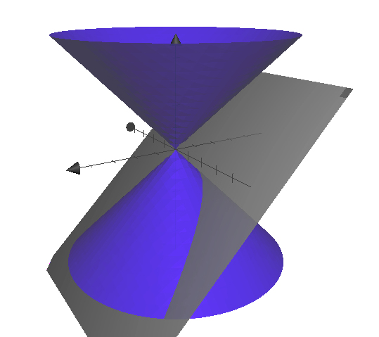
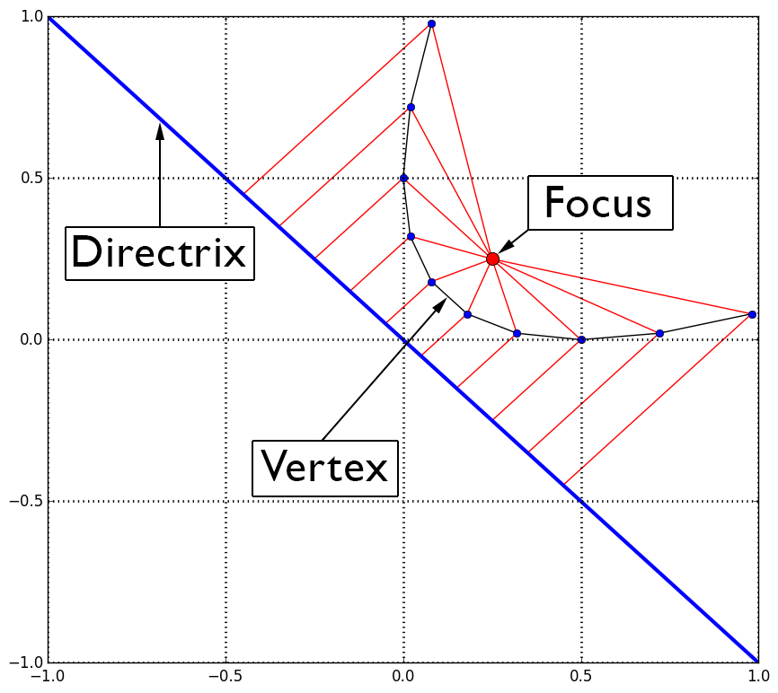

| « 4.7 | up | 9.3 » |
9.2 — The Parabola

A parabola is the intersection of a plane and a conic as shown above. In the x-y plane, it is defined as the set of all points that are equidistant from a fixed point called the focus and a fixed line called the directrix.

Sketch the graph of the parabola with vertex $(0,0)$ and focus at $(3,0)$. Also, sketch the graph with same vertex but with focus at $(-3,0)$.
Formulas and Such
We will only discuss two classes of parabolas: those that open up and down, and those that open left and right
|
|
Find the directrix of the parabola given by $y^2 = -x$.
$x=1/4$
Sketch the graph of $x^2 = -by$ for $b \lt 0$.
Determine the equation of a parabola with focus at $(0, -1/4)$ and directrix given by the line $y=1/4$.
$x^2-y$
Find the focus of the parabola with equation $(x-2)^2 = -8(y-5)$.
$(2,3)$
Select the equation of the parabola with focus at $(2,-3/4)$ and vertex at $(2,-1)$.
$(y+1) = (x-2)^2$
Select the equation of the parabola with directrix $y=7/2$ and vertex at $(2,3)$.
$-2 (y-3) = (x-2)^2$
Select the equation of the parabola with focus at $(1/2, 0)$ and vertex at $(0,0)$.
$y^2 = 2x$